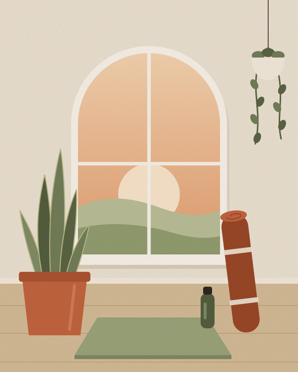
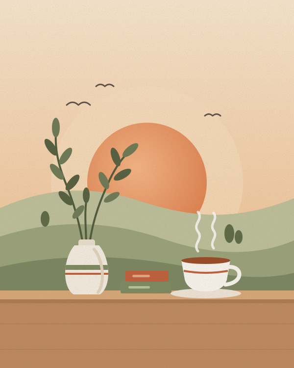
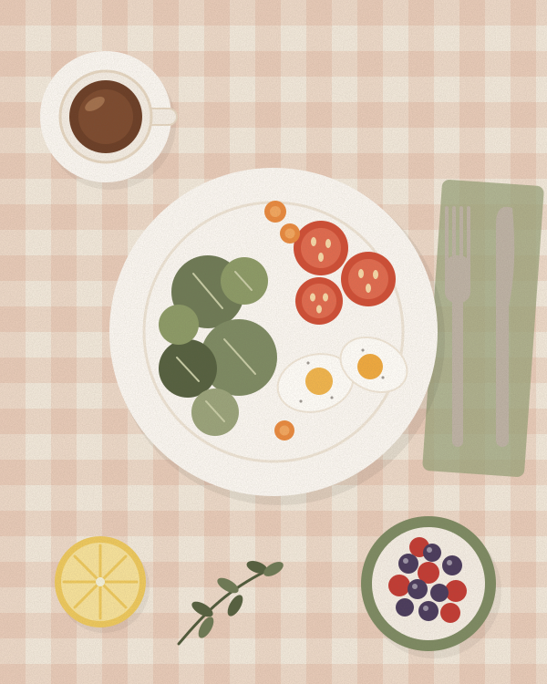

Bem-Estar
Sono de qualidade, pausas para respirar, movimento sem academia e uma relação mais saudável com o celular.
- sono
- respiração
- movimento
Blog de Life Style
O Ritmo Leve é um blog de estilo de vida para quem quer desacelerar sem deixar de viver. Toda semana publicamos ideias simples e possíveis sobre bem-estar, comida de verdade e organização da casa e da rotina — para sobrar tempo e energia para o que importa.

Post novotodo domingo de manhã
Como o blog funciona
Cada editoria reúne textos curtos e práticos. Sem fórmulas milagrosas: só hábitos pequenos que cabem na vida real.
Use o menu no topo de qualquer página para navegar entre Bem-Estar, Alimentação e Casa & Rotina.
Todo texto mostra a data e o tempo de leitura e termina com uma sugestão para testar ainda hoje.
Mande dúvidas, conte o que funcionou e sugira os próximos temas pela página de Contatos.
Conteúdos em destaque
Clique na imagem de cada editoria para abrir a página com todos os textos.

Sono de qualidade, pausas para respirar, movimento sem academia e uma relação mais saudável com o celular.

Comida de verdade sem complicação: prato equilibrado, receitas rápidas, marmitas da semana e a feira de cada estação.

Rituais para manhãs mais calmas, destralhe em pequenas doses, planejamento semanal e um cantinho de pausa em casa.
Pequenos hábitos, repetidos com gentileza, mudam mais do que grandes resoluções.